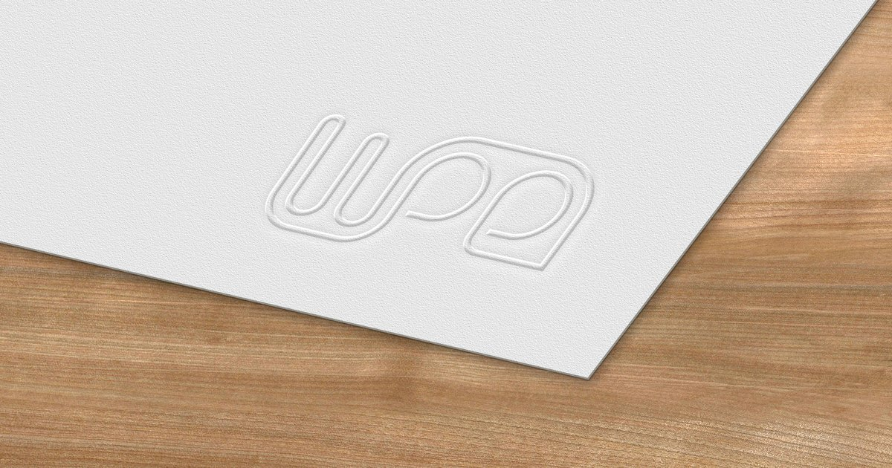

Forty cubic metres of controlled air
You cannot run a controlled experiment on an occupied hospital ward. So we built a room where you can, and this is what we do in it.
Read MoreStay updated with the latest from the WPE department

Five doctoral researchers, a brief the group wrote itself, and a visual identity that is still in use: the monogram, the five named colours, the three typefaces and the pattern. With the assets they produced.
 By Anushi Khandare
By Anushi Khandare

You cannot run a controlled experiment on an occupied hospital ward. So we built a room where you can, and this is what we do in it.
Read More
Pit latrines were never designed for floods. Fieldwork in India and Uganda, and an hour of flooding simulated in CFD, show what comes out of one when the water rises.
Read More
Earth Overshoot Day fell on 30 July. Qatar would reach it on 4 February, Honduras on 27 November, and thirteen countries never. All 82, on one timeline.
Read More
Five doctoral researchers designed the logo, the five colours, the typefaces and the pattern that this website still runs on. The assets, and the reasoning behind them.
Read More